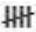
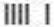
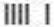
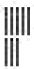
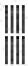
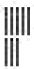
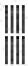

Les retraits
.
En accord avec la ‘définition des termes’ des règles officiels du baseball (OBR):
"Un OUT est l’un des trois retraits requis d’une équipe offensive pendant son temps à la batte."
Un retrait est enregistré avec un cercle dans lequel on indique, en f
o
nction de la dynamique du jeu, le numéro ou les numéros des positions défensives qui ont
participé
au retrait et,
en dernier, celui du défenseur qui a effectué le retrait.
On y ajoute, si nécessaire, le symbole décrivant le jeu, ainsi que la cause du retrait.
Les assistances et le retrait seront portée au crédit des joueurs qui ont participé a ce retrait dans la partie dans les statistiques défensives
avec des annotations.
 En accord avec la règle 9.09(a) des règle du baseball (OBR):
"
Le scoreur officiel accordera un retrait à chaque défenseur qui (1) attrape une balle en vol, que ce soit en territoire des bonnes balles ou en territoire des
fausses balles,
(2) attrape une balle frappée ou relayée et touche sa base pour retirer un batteur ou un coureur,
ou
(3) touche un coureur qui est hors de la base qu’il occupe de façon régulière.
"
En accord avec la règle 9.09(a) des règle du baseball (OBR):
"
Le scoreur officiel accordera un retrait à chaque défenseur qui (1) attrape une balle en vol, que ce soit en territoire des bonnes balles ou en territoire des
fausses balles,
(2) attrape une balle frappée ou relayée et touche sa base pour retirer un batteur ou un coureur,
ou
(3) touche un coureur qui est hors de la base qu’il occupe de façon régulière.
"
Les retraits sont notés avec une barre vertical
e
dans la colonne ‘PO’ dans la zone défense, sur la ligne du défenseur qui est crédité de ce retrait.
NB:
Cinq retraits sont note comme ceci
:

et non pas comme
 ou

ou

Cinq retraits sont note comme ceci :
 et non pas comme

ou

.
et non pas comme

ou

.